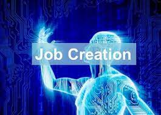

The term artificial intelligence may be used for
any computer that has characteristics similar to
the human brain, including the ability to think critically, make decisions,
and increase productivity. The foundation of AI is human insights that may be determined in such a manner
that machines can easily realize the jobs, from the most simple to the most complicated.
HUMAN INTELLIGENCE
The origins of human intelligence and conduct may be
traced back to the individual's unique combination of
genetics, upbringing, and exposure to various situation
s and environments. And it hinges entirely on one's free
dom to shape his or her environment via the application o
f newly acquired information
Impact of AI on the Future of Jobs
1. Automation of Tasks
The most noticeable effect of AI has been the result of the
digitalization and automation of formerly manual processes
across a wide range of industries. These tasks, which were
formerly performed manually, are now performed digitally.
Currently, tasks or occupations that involve some degree of
repetition or the use and interpretation of large amounts of
data are communicated to and administered by a computer, and
in certain cases, the intervention of humans is not required
in order to complete these tasks or jobs.
2. New Opportunities

Artificial intelligence is creating new opportunities for the workforce
by automating formerly human-intensive tasks. The rapid development of
technology has resulted in the emergence of new fields of study and work,
such as digital engineering. Therefore, although traditional manual labor jobs
may go extinct, new opportunities and careers will emerge.
3. Economic Growth Model
When it's put to good use, rather than just for the
sake of progress, AI has the potential to increase
productivity and collaboration inside a company by
opening up vast new avenues for growth. As a result,
it may spur an increase in demand for goods and services,
and power an economic growth model that spreads prosperity
and raises standards of living.